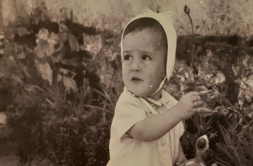

Biografía e Traxectoria Literaria
Xela Arias Castaño, naceu en Sarria (Lugo) en 1962. Deixou os estudos cando cursaba COU, para comezar a traballar en Edicións Xerais de Galicia
Primeiro realizou traballos de oficinista, despois de creación e investigación e entre 1990 e 1996 como correctora de estilo e editora.
En 1991 retomou os estudos, cursando Filoloxía Hispánica na Universidade de Vigo, licenciándose en 1996 pola Universidade de Santiago de Compostela, e iniciando a especialidade en galego-portugués.
Nos seus últimos anos de vida foi docente en diferentes municipios galegos.
En novembro do ano 2003 Xela Arias faleceu aos 41 anos nun hospital de Vigo debido a un ataque cardíaco.
En canto á súa traxectoria cabe destacar algúns dos seguintes datos: desde o ano 1980 Xela Arias empezou a publicar en xornais e revistas como A Nosa Terra, Faro de Vigo…
A súa introdución no mundo literario produciuse en 1986 con Denuncia do equilibrio. Nese mesmo ano ingresou na Asociación de Escritores e escritoras en Lingua Galega.
Ademais da súa faceta poética, Xela Arias dedicouse amplamente á tradución ao galego de diversos autores.